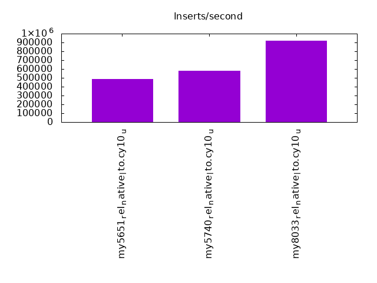
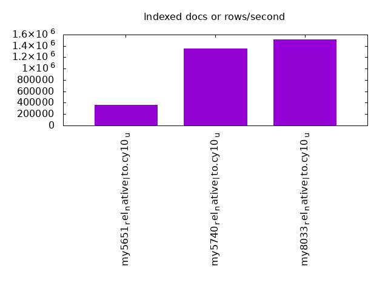
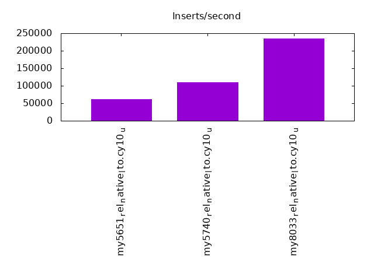
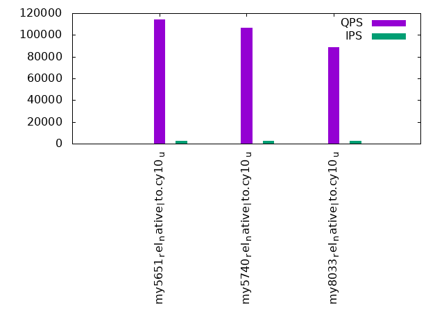
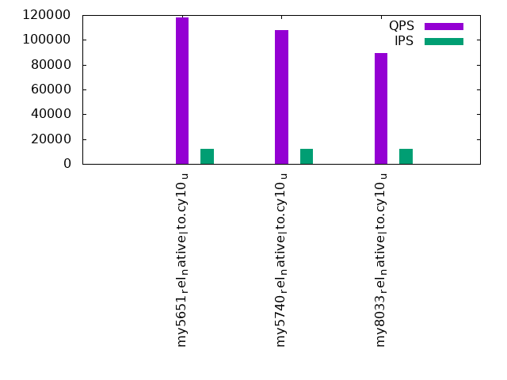
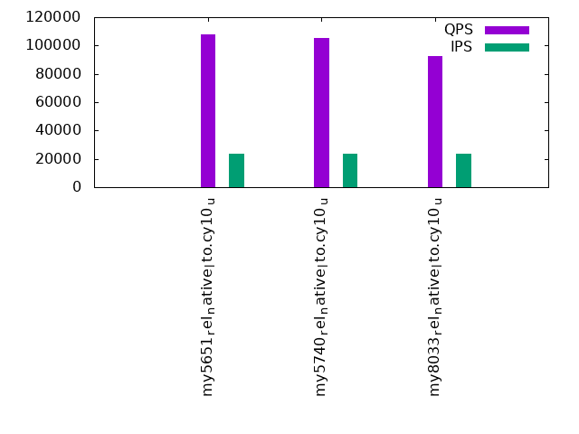

This is a report for the insert benchmark with 480M docs and 24 client(s). It is generated by scripts (bash, awk, sed) and Tufte might not be impressed. An overview of the insert benchmark is here and a short update is here. Below, by DBMS, I mean DBMS+version.config. An example is my8020.c10b40 where my means MySQL, 8020 is version 8.0.20 and c10b40 is the name for the configuration file.
The test server has 80 cores with hyperthreads enabled, 256G RAM and fast storage. The benchmark was run with 24 client and there were 1 or 3 connections per client (1 for queries or inserts without rate limits, 1+1 for rate limited inserts+deletes). There are 24 tables, with a client per table. It loads 480M rows without secondary indexes, creates secondary indexes, then inserts 960M rows with a delete per insert to avoid growing the table. It then does 3 read+write tests for 3600s each that do queries as fast as possible with 100, 500 and then 1000 inserts/second/client concurrent with the queries and 1000 deletes/second to avoid growing the table. The database is cached by InnoDB.
The tested DBMS are:
The numbers are inserts/s for l.i0 and l.i1, indexed docs (or rows) /s for l.x and queries/s for q*.2. The values are the average rate over the entire test for inserts (IPS) and queries (QPS). The range of values for IPS and QPS is split into 3 parts: bottom 25%, middle 50%, top 25%. Values in the bottom 25% have a red background, values in the top 25% have a green background and values in the middle have no color. A gray background is used for values that can be ignored because the DBMS did not sustain the target insert rate. Red backgrounds are not used when the minimum value is within 80% of the max value.
| dbms | l.i0 | l.x | l.i1 | q100.1 | q500.1 | q1000.1 |
|---|---|---|---|---|---|---|
| my5651_rel_native_lto.cy10_u | 483871 | 365095 | 61511 | 114414 | 118373 | 107661 |
| my5740_rel_native_lto.cy10_u | 579710 | 1352394 | 109626 | 106796 | 107989 | 105594 |
| my8033_rel_native_lto.cy10_u | 917782 | 1519304 | 234375 | 88428 | 89513 | 92676 |
This table has relative throughput, throughput for the DBMS relative to the DBMS in the first line, using the absolute throughput from the previous table. Values less than 0.95 have a yellow background. Values greater than 1.05 have a blue background.
| dbms | l.i0 | l.x | l.i1 | q100.1 | q500.1 | q1000.1 |
|---|---|---|---|---|---|---|
| my5651_rel_native_lto.cy10_u | 1.00 | 1.00 | 1.00 | 1.00 | 1.00 | 1.00 |
| my5740_rel_native_lto.cy10_u | 1.20 | 3.70 | 1.78 | 0.93 | 0.91 | 0.98 |
| my8033_rel_native_lto.cy10_u | 1.90 | 4.16 | 3.81 | 0.77 | 0.76 | 0.86 |
This lists the average rate of inserts/s for the tests that do inserts concurrent with queries. For such tests the query rate is listed in the table above. The read+write tests are setup so that the insert rate should match the target rate every second. Cells that are not at least 95% of the target have a red background to indicate a failure to satisfy the target.
| dbms | q100.1 | q500.1 | q1000.1 |
|---|---|---|---|
| my5651_rel_native_lto.cy10_u | 2380 | 11904 | 23834 |
| my5740_rel_native_lto.cy10_u | 2379 | 11904 | 23828 |
| my8033_rel_native_lto.cy10_u | 2378 | 11898 | 23821 |
| target | 2400 | 12000 | 24000 |
l.i0: load without secondary indexes. Graphs for performance per 1-second interval are here.
Average throughput:
Insert response time histogram: each cell has the percentage of responses that take <= the time in the header and max is the max response time in seconds. For the max column values in the top 25% of the range have a red background and in the bottom 25% of the range have a green background. The red background is not used when the min value is within 80% of the max value.
| dbms | 256us | 1ms | 4ms | 16ms | 64ms | 256ms | 1s | 4s | 16s | gt | max |
|---|---|---|---|---|---|---|---|---|---|---|---|
| my5651_rel_native_lto.cy10_u | 0.347 | 11.482 | 87.914 | 0.215 | 0.043 | 0.100 | |||||
| my5740_rel_native_lto.cy10_u | 0.216 | 57.866 | 41.872 | 0.003 | 0.043 | 0.166 | |||||
| my8033_rel_native_lto.cy10_u | 99.924 | 0.027 | 0.006 | 0.043 | 0.118 |
Performance metrics for the DBMS listed above. Some are normalized by throughput, others are not. Legend for results is here.
ips qps rps rmbps wps wmbps rpq rkbpq wpi wkbpi csps cpups cspq cpupq dbgb1 dbgb2 rss maxop p50 p99 tag 483871 0 0 0.0 2283.9 112.3 0.000 0.000 0.005 0.238 77635 38.7 0.160 64 31.8 160.3 46.5 0.100 20177 17882 480m.my5651_rel_native_lto.cy10_u 579710 0 0 0.0 2893.0 137.5 0.000 0.000 0.005 0.243 91633 40.5 0.158 56 31.8 160.3 47.5 0.166 24775 21881 480m.my5740_rel_native_lto.cy10_u 917782 0 0 0.0 4378.5 217.0 0.000 0.000 0.005 0.242 208787 51.0 0.227 44 31.7 160.3 47.4 0.118 39760 34066 480m.my8033_rel_native_lto.cy10_u
l.x: create secondary indexes.
Average throughput:
Performance metrics for the DBMS listed above. Some are normalized by throughput, others are not. Legend for results is here.
ips qps rps rmbps wps wmbps rpq rkbpq wpi wkbpi csps cpups cspq cpupq dbgb1 dbgb2 rss maxop p50 p99 tag 365095 0 0 0.0 20148.6 687.1 0.000 0.000 0.055 1.927 75986 31.1 0.208 68 65.2 193.7 80.7 0.002 NA NA 480m.my5651_rel_native_lto.cy10_u 1352394 0 0 0.0 21715.0 1151.5 0.000 0.000 0.016 0.872 110742 30.9 0.082 18 70.8 199.3 81.6 0.002 NA NA 480m.my5740_rel_native_lto.cy10_u 1519304 0 8178 396.0 31920.6 1167.4 0.005 0.267 0.021 0.787 177999 72.5 0.117 38 70.6 199.2 68.1 0.008 NA NA 480m.my8033_rel_native_lto.cy10_u
l.i1: continue load after secondary indexes created. Graphs for performance per 1-second interval are here.
Average throughput:
Insert response time histogram: each cell has the percentage of responses that take <= the time in the header and max is the max response time in seconds. For the max column values in the top 25% of the range have a red background and in the bottom 25% of the range have a green background. The red background is not used when the min value is within 80% of the max value.
| dbms | 256us | 1ms | 4ms | 16ms | 64ms | 256ms | 1s | 4s | 16s | gt | max |
|---|---|---|---|---|---|---|---|---|---|---|---|
| my5651_rel_native_lto.cy10_u | 0.008 | 16.328 | 83.638 | 0.025 | 0.163 | ||||||
| my5740_rel_native_lto.cy10_u | 0.012 | 99.772 | 0.193 | 0.023 | nonzero | 0.663 | |||||
| my8033_rel_native_lto.cy10_u | 20.825 | 78.862 | 0.273 | 0.039 | 0.185 |
Delete response time histogram: each cell has the percentage of responses that take <= the time in the header and max is the max response time in seconds. For the max column values in the top 25% of the range have a red background and in the bottom 25% of the range have a green background. The red background is not used when the min value is within 80% of the max value.
| dbms | 256us | 1ms | 4ms | 16ms | 64ms | 256ms | 1s | 4s | 16s | gt | max |
|---|---|---|---|---|---|---|---|---|---|---|---|
| my5651_rel_native_lto.cy10_u | 0.013 | 21.062 | 78.918 | 0.007 | 0.151 | ||||||
| my5740_rel_native_lto.cy10_u | 0.034 | 99.843 | 0.100 | 0.022 | nonzero | 0.660 | |||||
| my8033_rel_native_lto.cy10_u | 86.855 | 12.950 | 0.171 | 0.025 | 0.139 |
Performance metrics for the DBMS listed above. Some are normalized by throughput, others are not. Legend for results is here.
ips qps rps rmbps wps wmbps rpq rkbpq wpi wkbpi csps cpups cspq cpupq dbgb1 dbgb2 rss maxop p50 p99 tag 61511 0 1469 6.3 6840.1 212.3 0.024 0.105 0.111 3.535 134852 66.6 2.192 866 217.4 393.8 215.8 0.163 2547 2048 480m.my5651_rel_native_lto.cy10_u 109626 0 119 1.9 10923.2 342.8 0.001 0.017 0.100 3.202 114400 70.1 1.044 512 220.9 400.1 216.8 0.663 4595 4196 480m.my5740_rel_native_lto.cy10_u 234375 0 1156 18.1 19937.8 652.2 0.005 0.079 0.085 2.850 1022224 63.2 4.361 216 226.9 418.7 216.2 0.185 10489 1898 480m.my8033_rel_native_lto.cy10_u
q100.1: range queries with 100 insert/s per client. Graphs for performance per 1-second interval are here.
Average throughput:
Query response time histogram: each cell has the percentage of responses that take <= the time in the header and max is the max response time in seconds. For max values in the top 25% of the range have a red background and in the bottom 25% of the range have a green background. The red background is not used when the min value is within 80% of the max value.
| dbms | 256us | 1ms | 4ms | 16ms | 64ms | 256ms | 1s | 4s | 16s | gt | max |
|---|---|---|---|---|---|---|---|---|---|---|---|
| my5651_rel_native_lto.cy10_u | 93.070 | 6.651 | 0.164 | 0.115 | nonzero | 0.023 | |||||
| my5740_rel_native_lto.cy10_u | 84.942 | 15.055 | 0.003 | nonzero | nonzero | 0.023 | |||||
| my8033_rel_native_lto.cy10_u | 54.094 | 45.902 | 0.004 | nonzero | nonzero | 0.020 |
Insert response time histogram: each cell has the percentage of responses that take <= the time in the header and max is the max response time in seconds. For max values in the top 25% of the range have a red background and in the bottom 25% of the range have a green background. The red background is not used when the min value is within 80% of the max value.
| dbms | 256us | 1ms | 4ms | 16ms | 64ms | 256ms | 1s | 4s | 16s | gt | max |
|---|---|---|---|---|---|---|---|---|---|---|---|
| my5651_rel_native_lto.cy10_u | 32.093 | 67.597 | 0.310 | 0.044 | |||||||
| my5740_rel_native_lto.cy10_u | 31.056 | 68.943 | 0.001 | 0.022 | |||||||
| my8033_rel_native_lto.cy10_u | 53.372 | 46.627 | 0.001 | 0.018 |
Delete response time histogram: each cell has the percentage of responses that take <= the time in the header and max is the max response time in seconds. For max values in the top 25% of the range have a red background and in the bottom 25% of the range have a green background. The red background is not used when the min value is within 80% of the max value.
| dbms | 256us | 1ms | 4ms | 16ms | 64ms | 256ms | 1s | 4s | 16s | gt | max |
|---|---|---|---|---|---|---|---|---|---|---|---|
| my5651_rel_native_lto.cy10_u | 64.556 | 35.388 | 0.056 | 0.044 | |||||||
| my5740_rel_native_lto.cy10_u | 78.004 | 21.996 | 0.015 | ||||||||
| my8033_rel_native_lto.cy10_u | 99.812 | 0.187 | 0.001 | 0.023 |
Performance metrics for the DBMS listed above. Some are normalized by throughput, others are not. Legend for results is here.
ips qps rps rmbps wps wmbps rpq rkbpq wpi wkbpi csps cpups cspq cpupq dbgb1 dbgb2 rss maxop p50 p99 tag 2380 114414 1140 16.8 6756.2 195.3 0.010 0.150 2.839 84.042 488018 39.8 4.265 278 217.4 393.8 215.9 0.023 4795 4412 480m.my5651_rel_native_lto.cy10_u 2379 106796 967 15.1 7160.1 205.5 0.009 0.145 3.010 88.476 453290 41.7 4.244 312 220.9 400.1 216.9 0.023 4476 4188 480m.my5740_rel_native_lto.cy10_u 2378 88428 1203 18.8 7819.6 225.1 0.014 0.218 3.288 96.933 471405 40.7 5.331 368 226.9 385.6 216.2 0.020 3709 3293 480m.my8033_rel_native_lto.cy10_u
q500.1: range queries with 500 insert/s per client. Graphs for performance per 1-second interval are here.
Average throughput:
Query response time histogram: each cell has the percentage of responses that take <= the time in the header and max is the max response time in seconds. For max values in the top 25% of the range have a red background and in the bottom 25% of the range have a green background. The red background is not used when the min value is within 80% of the max value.
| dbms | 256us | 1ms | 4ms | 16ms | 64ms | 256ms | 1s | 4s | 16s | gt | max |
|---|---|---|---|---|---|---|---|---|---|---|---|
| my5651_rel_native_lto.cy10_u | 95.144 | 4.752 | 0.034 | 0.070 | nonzero | 0.061 | |||||
| my5740_rel_native_lto.cy10_u | 86.685 | 13.306 | 0.008 | nonzero | nonzero | nonzero | 0.095 | ||||
| my8033_rel_native_lto.cy10_u | 55.143 | 44.851 | 0.006 | nonzero | nonzero | 0.032 |
Insert response time histogram: each cell has the percentage of responses that take <= the time in the header and max is the max response time in seconds. For max values in the top 25% of the range have a red background and in the bottom 25% of the range have a green background. The red background is not used when the min value is within 80% of the max value.
| dbms | 256us | 1ms | 4ms | 16ms | 64ms | 256ms | 1s | 4s | 16s | gt | max |
|---|---|---|---|---|---|---|---|---|---|---|---|
| my5651_rel_native_lto.cy10_u | 10.727 | 89.101 | 0.172 | 0.001 | 0.077 | ||||||
| my5740_rel_native_lto.cy10_u | 6.337 | 93.658 | 0.005 | nonzero | 0.093 | ||||||
| my8033_rel_native_lto.cy10_u | 83.694 | 16.306 | nonzero | 0.021 |
Delete response time histogram: each cell has the percentage of responses that take <= the time in the header and max is the max response time in seconds. For max values in the top 25% of the range have a red background and in the bottom 25% of the range have a green background. The red background is not used when the min value is within 80% of the max value.
| dbms | 256us | 1ms | 4ms | 16ms | 64ms | 256ms | 1s | 4s | 16s | gt | max |
|---|---|---|---|---|---|---|---|---|---|---|---|
| my5651_rel_native_lto.cy10_u | 16.760 | 83.173 | 0.066 | 0.001 | 0.074 | ||||||
| my5740_rel_native_lto.cy10_u | 14.686 | 85.310 | 0.004 | 0.045 | |||||||
| my8033_rel_native_lto.cy10_u | 99.900 | 0.099 | nonzero | 0.020 |
Performance metrics for the DBMS listed above. Some are normalized by throughput, others are not. Legend for results is here.
ips qps rps rmbps wps wmbps rpq rkbpq wpi wkbpi csps cpups cspq cpupq dbgb1 dbgb2 rss maxop p50 p99 tag 11904 118373 823 8.4 5354.0 155.7 0.007 0.073 0.450 13.394 500843 42.5 4.231 287 217.4 393.8 215.9 0.061 4891 4460 480m.my5651_rel_native_lto.cy10_u 11904 107989 489 7.6 5682.5 164.5 0.005 0.072 0.477 14.148 456755 43.7 4.230 324 220.9 400.1 216.9 0.095 4523 4220 480m.my5740_rel_native_lto.cy10_u 11898 89513 752 11.7 6316.2 184.5 0.008 0.134 0.531 15.882 505405 42.1 5.646 376 226.9 388.9 216.2 0.032 3756 3309 480m.my8033_rel_native_lto.cy10_u
q1000.1: range queries with 1000 insert/s per client. Graphs for performance per 1-second interval are here.
Average throughput:
Query response time histogram: each cell has the percentage of responses that take <= the time in the header and max is the max response time in seconds. For max values in the top 25% of the range have a red background and in the bottom 25% of the range have a green background. The red background is not used when the min value is within 80% of the max value.
| dbms | 256us | 1ms | 4ms | 16ms | 64ms | 256ms | 1s | 4s | 16s | gt | max |
|---|---|---|---|---|---|---|---|---|---|---|---|
| my5651_rel_native_lto.cy10_u | 84.144 | 15.475 | 0.317 | 0.064 | nonzero | 0.028 | |||||
| my5740_rel_native_lto.cy10_u | 82.592 | 17.313 | 0.073 | 0.021 | nonzero | 0.036 | |||||
| my8033_rel_native_lto.cy10_u | 62.433 | 37.547 | 0.019 | nonzero | nonzero | 0.023 |
Insert response time histogram: each cell has the percentage of responses that take <= the time in the header and max is the max response time in seconds. For max values in the top 25% of the range have a red background and in the bottom 25% of the range have a green background. The red background is not used when the min value is within 80% of the max value.
| dbms | 256us | 1ms | 4ms | 16ms | 64ms | 256ms | 1s | 4s | 16s | gt | max |
|---|---|---|---|---|---|---|---|---|---|---|---|
| my5651_rel_native_lto.cy10_u | 0.358 | 17.403 | 82.238 | 0.001 | 0.076 | ||||||
| my5740_rel_native_lto.cy10_u | 2.776 | 93.934 | 3.290 | 0.058 | |||||||
| my8033_rel_native_lto.cy10_u | 59.408 | 40.586 | 0.006 | 0.030 |
Delete response time histogram: each cell has the percentage of responses that take <= the time in the header and max is the max response time in seconds. For max values in the top 25% of the range have a red background and in the bottom 25% of the range have a green background. The red background is not used when the min value is within 80% of the max value.
| dbms | 256us | 1ms | 4ms | 16ms | 64ms | 256ms | 1s | 4s | 16s | gt | max |
|---|---|---|---|---|---|---|---|---|---|---|---|
| my5651_rel_native_lto.cy10_u | 0.169 | 20.179 | 79.652 | nonzero | 0.074 | ||||||
| my5740_rel_native_lto.cy10_u | 2.837 | 94.731 | 2.432 | 0.048 | |||||||
| my8033_rel_native_lto.cy10_u | 97.056 | 2.941 | 0.004 | 0.035 |
Performance metrics for the DBMS listed above. Some are normalized by throughput, others are not. Legend for results is here.
ips qps rps rmbps wps wmbps rpq rkbpq wpi wkbpi csps cpups cspq cpupq dbgb1 dbgb2 rss maxop p50 p99 tag 23834 107661 791 6.1 3495.6 103.3 0.007 0.058 0.147 4.440 456168 54.5 4.237 405 217.4 393.8 215.9 0.028 4491 4140 480m.my5651_rel_native_lto.cy10_u 23828 105594 255 4.0 4920.9 143.9 0.002 0.039 0.207 6.185 434485 49.1 4.115 372 220.9 400.1 216.9 0.036 4412 4060 480m.my5740_rel_native_lto.cy10_u 23821 92676 163 2.5 5128.4 151.8 0.002 0.028 0.215 6.524 514374 40.7 5.550 351 226.9 355.9 216.2 0.023 3884 3500 480m.my8033_rel_native_lto.cy10_u
l.i0: load without secondary indexes
Performance metrics for all DBMS, not just the ones listed above. Some are normalized by throughput, others are not. Legend for results is here.
ips qps rps rmbps wps wmbps rpq rkbpq wpi wkbpi csps cpups cspq cpupq dbgb1 dbgb2 rss maxop p50 p99 tag 483871 0 0 0.0 2283.9 112.3 0.000 0.000 0.005 0.238 77635 38.7 0.160 64 31.8 160.3 46.5 0.100 20177 17882 480m.my5651_rel_native_lto.cy10_u 579710 0 0 0.0 2893.0 137.5 0.000 0.000 0.005 0.243 91633 40.5 0.158 56 31.8 160.3 47.5 0.166 24775 21881 480m.my5740_rel_native_lto.cy10_u 917782 0 0 0.0 4378.5 217.0 0.000 0.000 0.005 0.242 208787 51.0 0.227 44 31.7 160.3 47.4 0.118 39760 34066 480m.my8033_rel_native_lto.cy10_u
l.x: create secondary indexes
Performance metrics for all DBMS, not just the ones listed above. Some are normalized by throughput, others are not. Legend for results is here.
ips qps rps rmbps wps wmbps rpq rkbpq wpi wkbpi csps cpups cspq cpupq dbgb1 dbgb2 rss maxop p50 p99 tag 365095 0 0 0.0 20148.6 687.1 0.000 0.000 0.055 1.927 75986 31.1 0.208 68 65.2 193.7 80.7 0.002 NA NA 480m.my5651_rel_native_lto.cy10_u 1352394 0 0 0.0 21715.0 1151.5 0.000 0.000 0.016 0.872 110742 30.9 0.082 18 70.8 199.3 81.6 0.002 NA NA 480m.my5740_rel_native_lto.cy10_u 1519304 0 8178 396.0 31920.6 1167.4 0.005 0.267 0.021 0.787 177999 72.5 0.117 38 70.6 199.2 68.1 0.008 NA NA 480m.my8033_rel_native_lto.cy10_u
l.i1: continue load after secondary indexes created
Performance metrics for all DBMS, not just the ones listed above. Some are normalized by throughput, others are not. Legend for results is here.
ips qps rps rmbps wps wmbps rpq rkbpq wpi wkbpi csps cpups cspq cpupq dbgb1 dbgb2 rss maxop p50 p99 tag 61511 0 1469 6.3 6840.1 212.3 0.024 0.105 0.111 3.535 134852 66.6 2.192 866 217.4 393.8 215.8 0.163 2547 2048 480m.my5651_rel_native_lto.cy10_u 109626 0 119 1.9 10923.2 342.8 0.001 0.017 0.100 3.202 114400 70.1 1.044 512 220.9 400.1 216.8 0.663 4595 4196 480m.my5740_rel_native_lto.cy10_u 234375 0 1156 18.1 19937.8 652.2 0.005 0.079 0.085 2.850 1022224 63.2 4.361 216 226.9 418.7 216.2 0.185 10489 1898 480m.my8033_rel_native_lto.cy10_u
q100.1: range queries with 100 insert/s per client
Performance metrics for all DBMS, not just the ones listed above. Some are normalized by throughput, others are not. Legend for results is here.
ips qps rps rmbps wps wmbps rpq rkbpq wpi wkbpi csps cpups cspq cpupq dbgb1 dbgb2 rss maxop p50 p99 tag 2380 114414 1140 16.8 6756.2 195.3 0.010 0.150 2.839 84.042 488018 39.8 4.265 278 217.4 393.8 215.9 0.023 4795 4412 480m.my5651_rel_native_lto.cy10_u 2379 106796 967 15.1 7160.1 205.5 0.009 0.145 3.010 88.476 453290 41.7 4.244 312 220.9 400.1 216.9 0.023 4476 4188 480m.my5740_rel_native_lto.cy10_u 2378 88428 1203 18.8 7819.6 225.1 0.014 0.218 3.288 96.933 471405 40.7 5.331 368 226.9 385.6 216.2 0.020 3709 3293 480m.my8033_rel_native_lto.cy10_u
q500.1: range queries with 500 insert/s per client
Performance metrics for all DBMS, not just the ones listed above. Some are normalized by throughput, others are not. Legend for results is here.
ips qps rps rmbps wps wmbps rpq rkbpq wpi wkbpi csps cpups cspq cpupq dbgb1 dbgb2 rss maxop p50 p99 tag 11904 118373 823 8.4 5354.0 155.7 0.007 0.073 0.450 13.394 500843 42.5 4.231 287 217.4 393.8 215.9 0.061 4891 4460 480m.my5651_rel_native_lto.cy10_u 11904 107989 489 7.6 5682.5 164.5 0.005 0.072 0.477 14.148 456755 43.7 4.230 324 220.9 400.1 216.9 0.095 4523 4220 480m.my5740_rel_native_lto.cy10_u 11898 89513 752 11.7 6316.2 184.5 0.008 0.134 0.531 15.882 505405 42.1 5.646 376 226.9 388.9 216.2 0.032 3756 3309 480m.my8033_rel_native_lto.cy10_u
q1000.1: range queries with 1000 insert/s per client
Performance metrics for all DBMS, not just the ones listed above. Some are normalized by throughput, others are not. Legend for results is here.
ips qps rps rmbps wps wmbps rpq rkbpq wpi wkbpi csps cpups cspq cpupq dbgb1 dbgb2 rss maxop p50 p99 tag 23834 107661 791 6.1 3495.6 103.3 0.007 0.058 0.147 4.440 456168 54.5 4.237 405 217.4 393.8 215.9 0.028 4491 4140 480m.my5651_rel_native_lto.cy10_u 23828 105594 255 4.0 4920.9 143.9 0.002 0.039 0.207 6.185 434485 49.1 4.115 372 220.9 400.1 216.9 0.036 4412 4060 480m.my5740_rel_native_lto.cy10_u 23821 92676 163 2.5 5128.4 151.8 0.002 0.028 0.215 6.524 514374 40.7 5.550 351 226.9 355.9 216.2 0.023 3884 3500 480m.my8033_rel_native_lto.cy10_u
Insert response time histogram
256us 1ms 4ms 16ms 64ms 256ms 1s 4s 16s gt max tag 0.000 0.347 11.482 87.914 0.215 0.043 0.000 0.000 0.000 0.000 0.100 my5651_rel_native_lto.cy10_u 0.000 0.216 57.866 41.872 0.003 0.043 0.000 0.000 0.000 0.000 0.166 my5740_rel_native_lto.cy10_u 0.000 0.000 99.924 0.027 0.006 0.043 0.000 0.000 0.000 0.000 0.118 my8033_rel_native_lto.cy10_u
TODO - determine whether there is data for create index response time
Insert response time histogram
256us 1ms 4ms 16ms 64ms 256ms 1s 4s 16s gt max tag 0.000 0.000 0.008 16.328 83.638 0.025 0.000 0.000 0.000 0.000 0.163 my5651_rel_native_lto.cy10_u 0.000 0.000 0.012 99.772 0.193 0.023 nonzero 0.000 0.000 0.000 0.663 my5740_rel_native_lto.cy10_u 0.000 0.000 20.825 78.862 0.273 0.039 0.000 0.000 0.000 0.000 0.185 my8033_rel_native_lto.cy10_u
Delete response time histogram
256us 1ms 4ms 16ms 64ms 256ms 1s 4s 16s gt max tag 0.000 0.000 0.013 21.062 78.918 0.007 0.000 0.000 0.000 0.000 0.151 my5651_rel_native_lto.cy10_u 0.000 0.000 0.034 99.843 0.100 0.022 nonzero 0.000 0.000 0.000 0.660 my5740_rel_native_lto.cy10_u 0.000 0.000 86.855 12.950 0.171 0.025 0.000 0.000 0.000 0.000 0.139 my8033_rel_native_lto.cy10_u
Query response time histogram
256us 1ms 4ms 16ms 64ms 256ms 1s 4s 16s gt max tag 93.070 6.651 0.164 0.115 nonzero 0.000 0.000 0.000 0.000 0.000 0.023 my5651_rel_native_lto.cy10_u 84.942 15.055 0.003 nonzero nonzero 0.000 0.000 0.000 0.000 0.000 0.023 my5740_rel_native_lto.cy10_u 54.094 45.902 0.004 nonzero nonzero 0.000 0.000 0.000 0.000 0.000 0.020 my8033_rel_native_lto.cy10_u
Insert response time histogram
256us 1ms 4ms 16ms 64ms 256ms 1s 4s 16s gt max tag 0.000 0.000 32.093 67.597 0.310 0.000 0.000 0.000 0.000 0.000 0.044 my5651_rel_native_lto.cy10_u 0.000 0.000 31.056 68.943 0.001 0.000 0.000 0.000 0.000 0.000 0.022 my5740_rel_native_lto.cy10_u 0.000 0.000 53.372 46.627 0.001 0.000 0.000 0.000 0.000 0.000 0.018 my8033_rel_native_lto.cy10_u
Delete response time histogram
256us 1ms 4ms 16ms 64ms 256ms 1s 4s 16s gt max tag 0.000 0.000 64.556 35.388 0.056 0.000 0.000 0.000 0.000 0.000 0.044 my5651_rel_native_lto.cy10_u 0.000 0.000 78.004 21.996 0.000 0.000 0.000 0.000 0.000 0.000 0.015 my5740_rel_native_lto.cy10_u 0.000 0.000 99.812 0.187 0.001 0.000 0.000 0.000 0.000 0.000 0.023 my8033_rel_native_lto.cy10_u
Query response time histogram
256us 1ms 4ms 16ms 64ms 256ms 1s 4s 16s gt max tag 95.144 4.752 0.034 0.070 nonzero 0.000 0.000 0.000 0.000 0.000 0.061 my5651_rel_native_lto.cy10_u 86.685 13.306 0.008 nonzero nonzero nonzero 0.000 0.000 0.000 0.000 0.095 my5740_rel_native_lto.cy10_u 55.143 44.851 0.006 nonzero nonzero 0.000 0.000 0.000 0.000 0.000 0.032 my8033_rel_native_lto.cy10_u
Insert response time histogram
256us 1ms 4ms 16ms 64ms 256ms 1s 4s 16s gt max tag 0.000 0.000 10.727 89.101 0.172 0.001 0.000 0.000 0.000 0.000 0.077 my5651_rel_native_lto.cy10_u 0.000 0.000 6.337 93.658 0.005 nonzero 0.000 0.000 0.000 0.000 0.093 my5740_rel_native_lto.cy10_u 0.000 0.000 83.694 16.306 nonzero 0.000 0.000 0.000 0.000 0.000 0.021 my8033_rel_native_lto.cy10_u
Delete response time histogram
256us 1ms 4ms 16ms 64ms 256ms 1s 4s 16s gt max tag 0.000 0.000 16.760 83.173 0.066 0.001 0.000 0.000 0.000 0.000 0.074 my5651_rel_native_lto.cy10_u 0.000 0.000 14.686 85.310 0.004 0.000 0.000 0.000 0.000 0.000 0.045 my5740_rel_native_lto.cy10_u 0.000 0.000 99.900 0.099 nonzero 0.000 0.000 0.000 0.000 0.000 0.020 my8033_rel_native_lto.cy10_u
Query response time histogram
256us 1ms 4ms 16ms 64ms 256ms 1s 4s 16s gt max tag 84.144 15.475 0.317 0.064 nonzero 0.000 0.000 0.000 0.000 0.000 0.028 my5651_rel_native_lto.cy10_u 82.592 17.313 0.073 0.021 nonzero 0.000 0.000 0.000 0.000 0.000 0.036 my5740_rel_native_lto.cy10_u 62.433 37.547 0.019 nonzero nonzero 0.000 0.000 0.000 0.000 0.000 0.023 my8033_rel_native_lto.cy10_u
Insert response time histogram
256us 1ms 4ms 16ms 64ms 256ms 1s 4s 16s gt max tag 0.000 0.000 0.358 17.403 82.238 0.001 0.000 0.000 0.000 0.000 0.076 my5651_rel_native_lto.cy10_u 0.000 0.000 2.776 93.934 3.290 0.000 0.000 0.000 0.000 0.000 0.058 my5740_rel_native_lto.cy10_u 0.000 0.000 59.408 40.586 0.006 0.000 0.000 0.000 0.000 0.000 0.030 my8033_rel_native_lto.cy10_u
Delete response time histogram
256us 1ms 4ms 16ms 64ms 256ms 1s 4s 16s gt max tag 0.000 0.000 0.169 20.179 79.652 nonzero 0.000 0.000 0.000 0.000 0.074 my5651_rel_native_lto.cy10_u 0.000 0.000 2.837 94.731 2.432 0.000 0.000 0.000 0.000 0.000 0.048 my5740_rel_native_lto.cy10_u 0.000 0.000 97.056 2.941 0.004 0.000 0.000 0.000 0.000 0.000 0.035 my8033_rel_native_lto.cy10_u